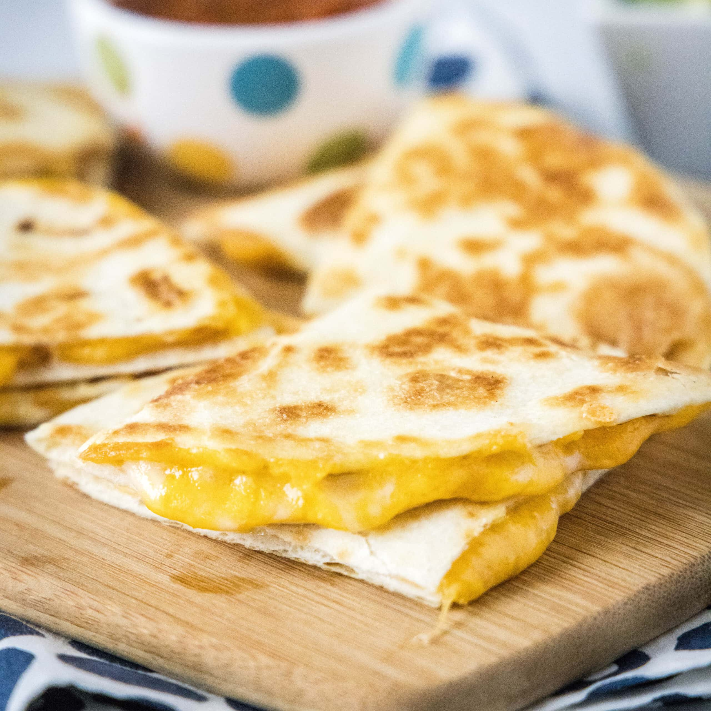

Quesadillas

Ingredients
- 1 Uncooked tortilla
- 1/4 cup shredded cheese
- Butter
Steps
- Preheat cast-iron pan on medium-low heat
- Cook tortilla for about 30 seconds on one side
- Flip tortilla and quickly spread butter and cheese and the cooked
side of the tortilla. Fold the tortilla in half. Cook for abouot 15 seconds,
then flip the folded quesadilla onto the other side and cook an
additional 15ish seconds until the cheese is melted
Home